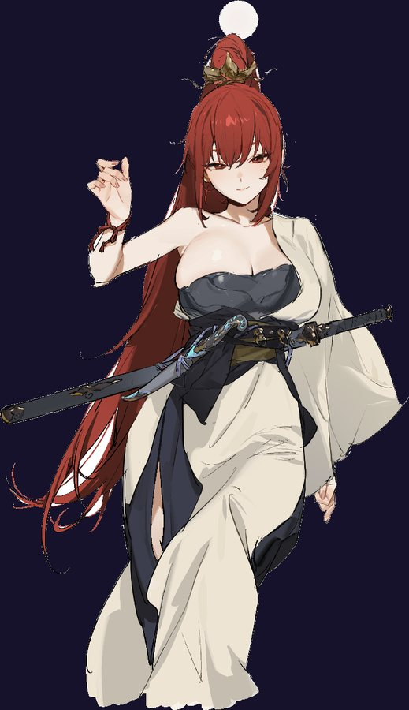
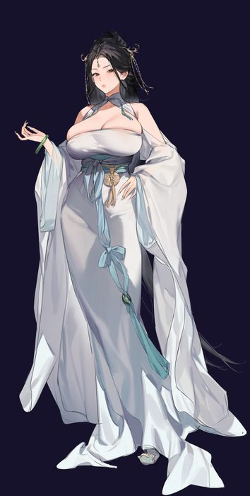
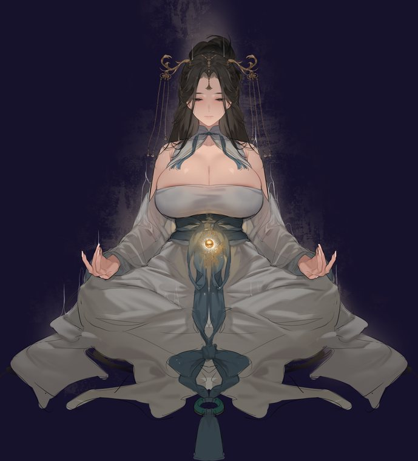
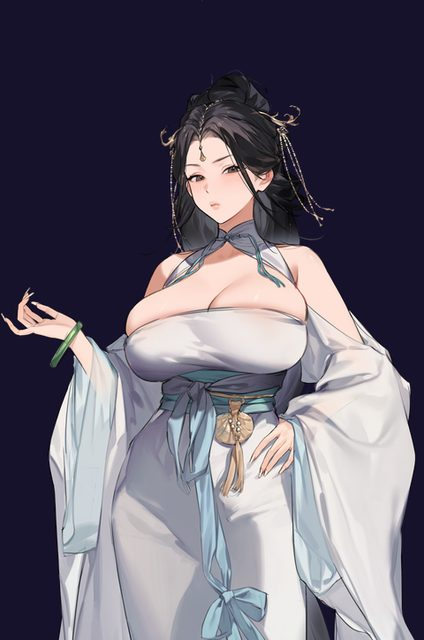
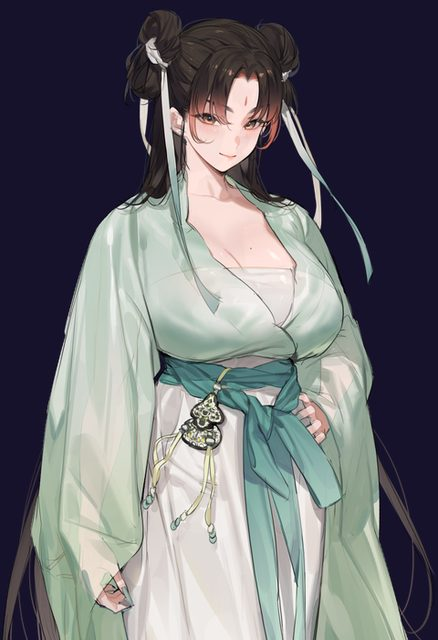

这是什么
一款剑修题材的仙侠割草 Roguelite。核心命题：耐玩靠 Loop（决策） 而非 Content（工作量）；但玩家真正记住的，是具体时刻（stories）——「我第七道雷前一步死了」，不是资源流图。
战斗 Fantasy · 一剑化万剑
Brotato 是「一台疯狂的武器机器」，VS 是「满屏都是我的弹幕」。我们的战斗幻想是——
关键洞察：战斗幻想 ⟺ 养剑 Meta，是同一件事。满屏剑气的源头，就是你跨局培养的那把本命剑；觉醒分叉（雷/血/飞）改变万剑如何铺满屏幕；境界越高，剑气越多越烈。于是「养剑」既是 Meta loop，又直接就是战斗爽点本身——两层焊成一层。
世界观支柱（一句话）
从一个凡人，修炼成能挑战天道、终将飞升的传奇修士。
任何 feature 先回答：帮不帮这句话 / 帮不帮「一剑化万剑」？都不帮 → 砍。（种地 / 钓鱼 / 后宫 / 家园装修 → 砍。）

三样别人抄不走的组合
① 万剑战斗身份
剑修「一剑化万剑」——满屏剑气就是核心爽点，且与养剑 Meta 同层。
② 世界随境界演变
每次突破，世界肉眼可见地变：新敌人 / 新掉落 / 新规则，而非弹出新菜单。
③ 渡劫赌命
渡劫可能失去多年修为——Risk/Reward 是所有决策的定盘星。
Store 定位不是「修仙 Brotato」，而是 “The world evolves with your cultivation.”——这是「一款剑修游戏」，卖点聚焦，不是「成为任何修士」。
玩家体验时间线 · 前两小时（本作脊柱）
设计判据：如果这条线足够精彩，系统大概率成立；如果它只是不断解锁新菜单，再优雅的资源图也留不住人。★ = 核心决策 / 最强 story。
| 时间 | 玩家在做什么 | 目标情绪 |
|---|---|---|
| 0–5 min | 第一局割草，剑气炸群；造化三选一，道行连跳 | 「手感真爽，一分钟就变强」 |
| 5–18 min | 结算掉修为 + 灵木能带走；第 2–3 局修为逼近筑基 | 「哦？这些能带走」「就差一点」 |
| ~20 min | 首次筑基，墨笔「筑基」全屏；世界当场变：炼丹房开门 + 地图现魔修·墨罗（会偷 buff、会嘲讽） | 「我升的是身份，不是数字」「世界因我而变了」 |
| 20–35 min | 炼丹：材料只够一颗保命丹，炼了带下局 | 「资源要规划了」 |
| ~40 min ★ | 攒够材料，逼出选择：炼渡劫丹冲金丹 / 觉醒木剑？（材料二选一） | 「到底冲境界还是变 build」← 核心决策 |
| 40–55 min | 选觉醒 → 木剑化雷剑，清群方式全变 | 「我的剑成型了」 |
| ~70 min ★ | 首次渡劫天劫战：欠准备，第七道雷死了 | 「就差一颗保命丹！」← 最强 story |
| 70–85 min | 失败反噬，决定再刷两局炼保命丹 | 「这次稳一点，再来一局」 |
| ~90 min | 二次渡劫成功，金丹！世界再变：Boss 掉元神、敌人升级为会格挡的剑仙 | 「我真的更深了」 |
境界脊柱 = 世界当场变（不是菜单）

境界靠战斗掉的修为推进（闸门轨，材料加速不了）。它不只是 炼气→筑基→金丹 的阶梯，更是身份分叉轴。每次突破让世界可见地变——不是弹菜单，而是下一局进副本，世界肉眼不同了。
| 境界 | 身份 | 世界怎么变（可见） | 敌人变 |
|---|---|---|---|
| 炼气 | 凡人入道 | 起点 | 妖兽 |
| 筑基 | 正式修士 | 炼丹房开门 + 地图现灵脉（材料点） | 出现魔修·墨罗（偷 buff） |
| 金丹 | 结丹延寿 | 炼器房开门（装备分叉）+ Boss 掉元神 | 出现剑仙（格挡） |
| 元婴 | 元神脱胎 | 藏经阁 + 灵兽园 + 敌人会夺舍 | 古神残骸（诅咒/夺技） |
| 化神 | 感悟法则 | 悟道塔（无尽）+ 法宝 + 副本现「改规则区」 | 法则造物 |
| 炼虚·合体 | 半步大能 | 隐藏 Boss + 装备本命化 | 天人 |
| 大乘 → 飞升 | 圆满 → 换界 | 飞升 → 世界纪元（v1.5） | — |
P1 先只接 炼气 / 筑基 / 金丹，元婴+ 做「即将开启」占位——用体验时间线控 scope。
敌人阶梯 · 敌人 = 角色
修 review 抓的最大漏洞：敌人不成长。我们的解法——敌人不是「后面 +HP」，而是换身份 + 每阶带一个新机制 = 新决策。这让「更深的世界」成为 Loop 而非 Content。
| 境界阶 | 敌人 | 新机制（制造决策） |
|---|---|---|
| 炼气 | 妖兽 | 冲 / 扑 |
| 筑基 | 魔修 | 驱散/偷造化 buff → 逼你保护增益、优先点杀 |
| 金丹 | 剑仙 | 格挡/反弹正面剑气 → 逼走位绕后、换 build |
| 元婴 | 古神残骸 | 诅咒/夺舍（暂夺一个技能）→ 逼取舍与容错 |
| 化神+ | 法则造物 | 局部改规则（禁疗区 / 反重力弹幕） |

核心决策 · 渡劫丹 vs 觉醒剑
耐玩的根：竞争经济。闸门资源（修为，限速、不可替代）与经济资源（灵木 / 妖骨，被争夺）分两轨，否则「境界永远最重要」会把经济吸干成一本道。
| 资源 | 轨 | 去向 | 竞争？ |
|---|---|---|---|
| 修为 / 妖魂 | 闸门 | 境界小层 + 圆满门槛 | 否（纯节拍） |
| 灵木 / 妖骨 | 经济 | ①渡劫丹 ②装备觉醒·分叉 ③洞府建设 | 是（核心竞争） |
| 灵石 | 经济 | 洞府建设 + 装备 +N + 占卜 | 软竞争 |
| 丹药 | 中间品 | 战斗即时吃 或 囤着渡劫 | 是（当下 vs 储备） |
渡劫 · 风险 · 保底
不是掷骰，是试炼
扛九道天雷（复用地火/预警）+ 每道间刷精英。成功由技术 + 准备余量决定，保留能动性。
余量三来源
①圆满度（修为超门槛越多越稳）②带的丹（保命丹续命）③装备分叉是否成型。所谓「80% 成功率」= 我准备到几成。
失败反噬（不劝退）
不掉大境界（身份不回退）；但丹消耗 + 损失部分当前修为 + 短冷却 → 逼「再炼一颗保命丹再冲」。
保底防雪崩
连败 N 次后天劫强度递减 / 给一次「渡劫余烬」减伤，保证不会无限卡墙。
装备培养 · 木剑 → 觉醒 雷 / 血 / 飞
培养链：木剑 → +N（灵石，软线）→ 觉醒（★三选一）→ 化形 → 本命法宝（终点，不用「飞升」一词——飞升只属于人物）。觉醒是分叉点，改整个 build，一把剑只能选一支。
⚡ 雷
范围连锁 / 清群。万剑化作连锁雷网，铺满全屏。
🩸 血
吸血 / 高风险高回报。残血反哺，一屏收割。
🗡 飞
御剑追击 / 单体爆发。一剑穿刺，直取 Boss。
流派 = 身份轴（Progression ≠ Fantasy）
修仙是 Setting，不是 Fantasy——同一 Setting 下有几十种幻想（剑仙 / 炼丹师 / 御兽 / 邪修 / 体修）。若所有 loop 最终都只为「突破境界」，第 20 小时就沦为 checklist。解法：某一境选定流派，此后掉落表 / 商店 / Boss 掉落 / 资源权重全不同——同一套系统产出不同人生（改权重，不是加系统）。
剑修 P1 唯一上线
就是现在的游戏。「筑基选身份」由现成的觉醒分叉（雷/血/飞）承载——零新战斗引擎。
丹 / 体 / 符 / 御兽 / 魔 1.0 后
体修无蓝条只血条、符修偏塔防、魔修更难但更快……验证后的重放放大器，重配掉落非新引擎。
Story Moments · 可分享时刻清单
玩家不会发「资源 A 流向 B」，会发「我第七道雷死了」。每个系统至少产出 1 个能截图 / 发 Discord / 讲给朋友的时刻，否则砍。✓ = P1 切片已能产出 ○ = 后续
同道 · 局外陪伴
洞府里陪你精进的同门师姐——出关归来、境界突破、道成道陨时，她们会点评、会打气。局外美少女立绘是陪伴层，不是付费墙；游戏身份始终是「剑修割草 + 境界」。

白衣 · 师姐
「挑一样趁手的，为姐看好你。」温润稳重，稳扎稳打那一路。

青衫 · 师妹
「磨蹭啥呢，妖都要笑你啦！」跳脱促狭，专挑狠招那一路。
现状 · 路线（Doc B）
| 周 | 交付（每周都可玩） | 命中瞬间 |
|---|---|---|
| W1 已实装 | 境界脊柱：修为跨局累积 + 阈值 + 全屏墨笔突破 + 存档 | ①地基 |
| W2 | 境界改世界 v1：筑基当场——炼丹房入口 + 刷魔修·墨罗（偷 buff + 姓名 + bark） | ① |
| W3 | 炼丹房 + 竞争材料：灵木/妖骨掉落 + 保命丹/渡劫丹（抢同一批材料） | ②地基 |
| W4 | 炼器觉醒分叉：木剑 → 雷/血/飞 三选一 + 锁定 | ②闭环 |
| W5 | 渡劫天劫战 + 风险/保底：九雷战 + 余量式成功 + 失败反噬 + 连败保底 | ③ |
| W6 | 打磨 + GO/NO-GO：按时间线校准数值，把三瞬间磨到爽 | 三瞬间齐 |
设计铁律 · 明确不做
铁律
- Loop > Content：同一套内容反复产生新决策才耐玩。
- 体验 > 框架：不制造「时刻」的优雅系统 → 砍。
- 扇入竞争：每种主材至少一处硬竞争。
- 闸门 ↔ 经济分离：修为限速，材料被争夺。
- 一条主线：主线只有境界；装备/伙伴/法宝从属它。
- 境界改世界，不开菜单；敌人跟着长。
明确不做 / 暂缓
- 砍 纪元 / 飞升 prestige → v1.5（是第二个游戏，先证明核心）
- 不做 Idle / 离线产出（会削弱战斗核心）
- 不做 图鉴当 loop → 降只读；真收集 = 奇遇/称号绑壮举
- 砍 种地 / 钓鱼 / 酒馆 / 后宫 / 家园装修
- 砍 抽卡（单机买断，无抽卡）